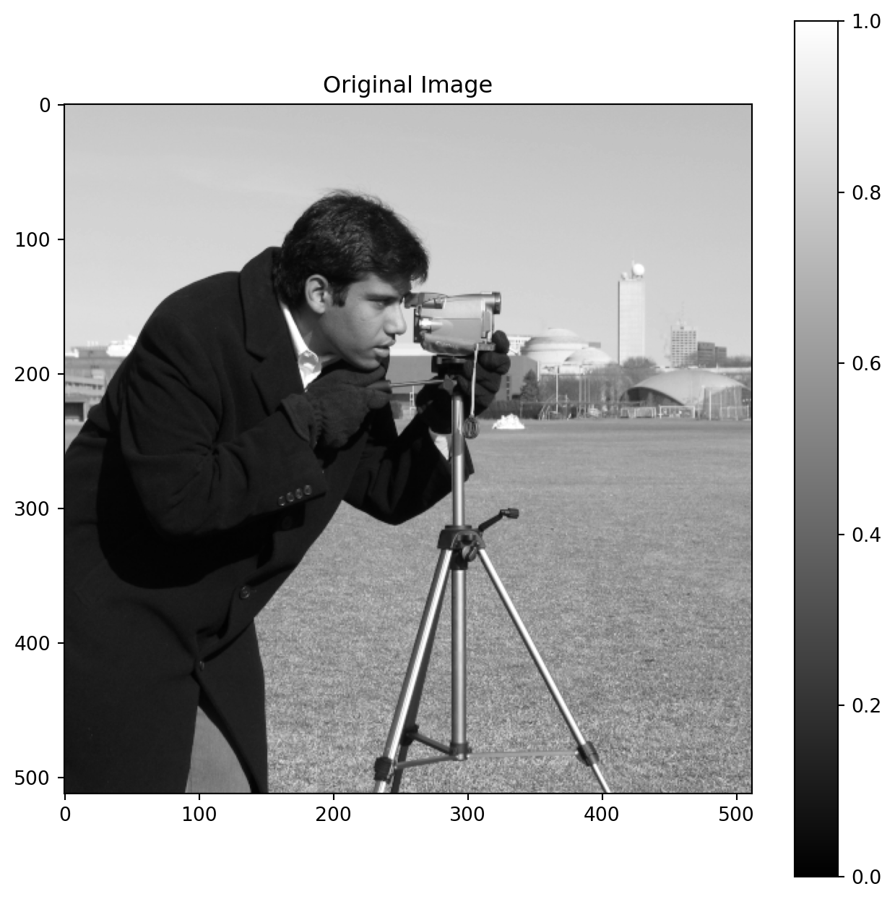
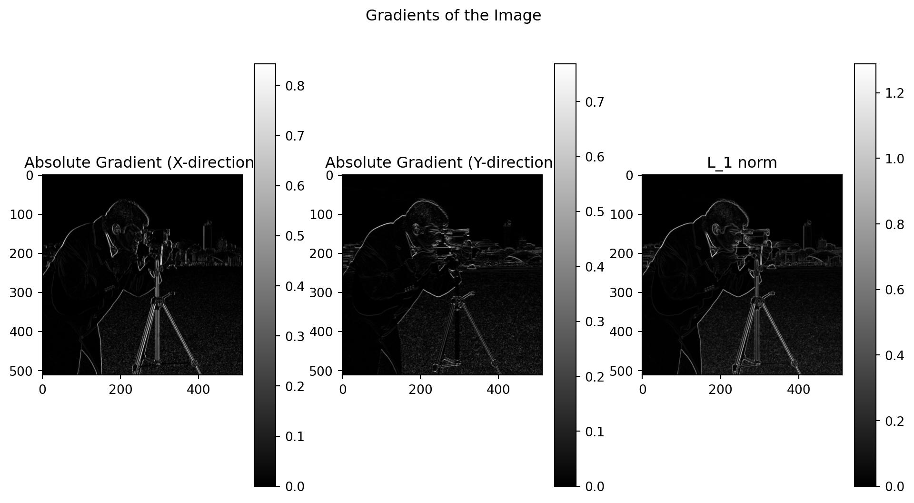
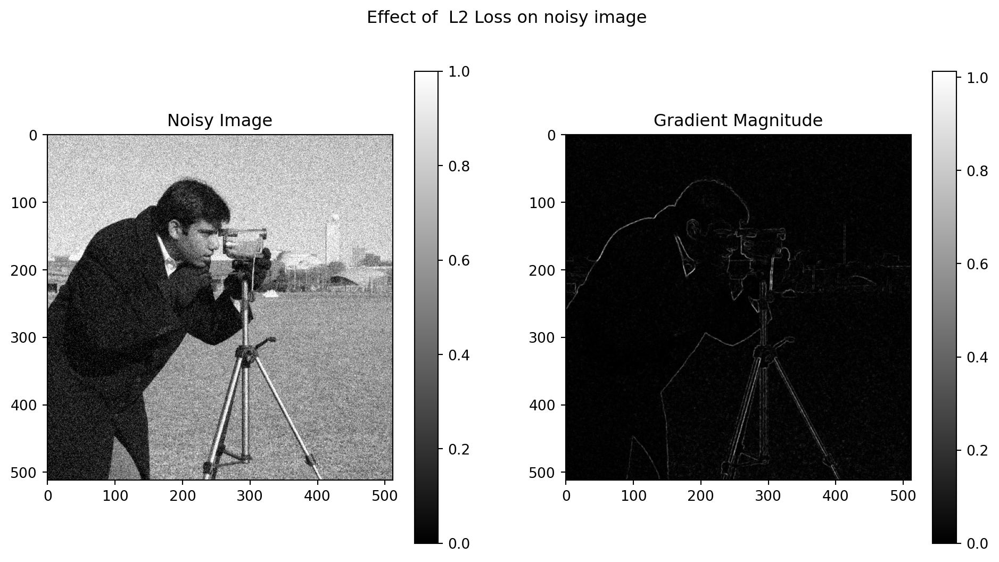

Review of Literature in Core Research Area - February 25, 2025
Author
Siju Swamy
Published
February 25, 2025
Uncertainty-Driven Loss for Single Image Super-Resolution
Research Gap Identified in the Paper
The authors argued that traditional Mean Squared Error (MSE) or L1 loss functions used in DL based super resolution models treat every pixel equally, regardless of its importance to visual perception. This is problematic because texture and edge areas carry more vital visual information than smooth areas, and MSE/L1 don’t account for this spatial variation. The equal weightage is non-optimal because it does not adaptive to the local image features which is an open research problem. Existing deep learning-based Single Image Super-Resolution (SISR) methods primarily focus on increasing network depth and complexity, or introducing attention mechanisms, while still relying on MSE or L1 loss. The authors contend that these methods do not explicitly address how to prioritize pixels containing important visual information in a principled and adaptive manner during the training process.
Proposed Approach
In the context of SISR, authors coined a new term “uncertainty” refers to the inherent ambiguity in reconstructing a high-resolution (HR) image from a low-resolution (LR) counterpart. They used uncertainty as a measure of difficulty in accurate image reconstruction.
The authors propose an adaptive weighted loss, uncertainty driven loss (UDL), that prioritizes texture and edge pixels with high uncertainty during training. Unlike traditional methods, UDL assigns larger weights to these pixels, forcing the network to focus on accurately reconstructing them. This addresses the limitations of MSE/L1 by explicitly accounting for the spatial variation in importance across different image regions.
There are two classes of uncertainty in Bayesian modeling: aleatoric uncertainty capturing noise inherent in observation data and epistemic uncertainty accounting for uncertainty of model about its predictions. The authors formulated SISR as a Bayesian estimation problem using the aleatoric uncertainty where the goal is to estimate not only the Super Resolved (SR) image (mean) but also its uncertainty (variance) simultaneously. This approach allows them to model the aleatoric uncertainty inherent in the SR process and to leverage prior knowledge for regularization.
Let \(y_i\) and \(x_i\) denote the low resolution and the respective high resolution image respectively. If \(f(\cdot)\) denotes an arbitrary SISR network and aleatoric uncertainty \(\theta_i\). The additive form of overall observation model can be written as:
\[
x_i = f(y_i) + \theta_i
\tag{1}\]
where \(\epsilon\) represents the Laplace distribution with zero mean and unit variance.
Traditional DL based models just focused on the mean, \(f(y_i)\) and discard the variance term \(\theta_i\). For high level vision task it will not raise any issues. But this approach is not suitable for low-level vision tasks like SISR, where high-uncertainty pixels (e.g., texture and edge pixels) are visually more important and should be prioritized. This discrepancy motivates their approach of prioritizing pixels in low-level vision tasks.
For the \((x_i,y_i)\) pair, the likelihood function is defined as:
So a MLE of Equation 3 is same as the minimization of Equation 4. \(\mathcal{L}_{EU}\) is called the estimating uncertainty loss for the SR problem.
The authors observe that most pixels in an image have relatively low uncertainty, while only a few texture and edge pixels have high uncertainty. By imposing a sparsity prior, they prevent the network from predicting high uncertainty for all pixels, leading to a more accurate and meaningful uncertainty estimation. The Jeffrey’s prior, \(p(\theta_i)\propto \dfrac{1}{\theta_i}\) is used to encourage sparsity in the uncertainty map. Using the Bayer’s probability:
The maximum likelihood estimate for logarithm of \(\theta_i=s\) is the minimization of log likelihood of the joint distribution of Equation 5 on \(N\) samples.
Authors proposed this function as their new loss function as:
Where \(\hat{s_i}=s_i-\min{s_i}\); \(i=1,\ldots , N\) is a non-negative linear scaling function.
To prevent uncertainty value from degenerating into zeros, the result of uncertainty estimation network in the first step will be passed to the second step as the attention signal (\(s =\ln(\theta)\)). The two step flow diagram of the proposed UDL is shown in Figure 1.
Figure 1: Block diagram of UDL implementation
Two main components of the UDL
Estimating Sparsity Uncertainty (ESU): This component estimates the pixel-wise uncertainty (variance) of the SR image. They use a Convolutional Neural Network (CNN) to predict the log variance, and regularize it using Jeffrey’s prior to promote sparsity in the uncertainty map. The loss used for this step is LESU.
Uncertainty-Driven Loss (LUDL): This is the adaptive weighted loss that guides the SISR network. It uses the uncertainty map estimated by ESU to assign larger weights to high-uncertainty pixels, effectively prioritizing them during training. The loss is computed using (Equation 7).
The method estimates a pixel-wise variance map (uncertainty) along with the SR image. It is assumed that the laplace distribution charateristics, can be captured with the variance map which is a latent variable. The authors use Peak Signal-to-Noise Ratio (PSNR) and Structural Similarity Index (SSIM) to evaluate the performance of their proposed method. The experimental results demonstrate that the proposed UDL consistently outperforms traditional loss functions (MSE, L1) and other state-of-the-art SISR methods (including those that model uncertainty, like GRAM) in terms of PSNR and SSIM on several benchmark datasets.
Key contributions of this work
The main contribution of the loss function based approach are:
A Bayesian estimation framework for SISR that simultaneously estimates the SR image and its uncertainty.
A new uncertainty-driven loss (UDL) that prioritizes high-uncertainty pixels during training.
A demonstration that UDL achieves better performance than traditional loss functions and other state-of-the-art methods without increasing computational cost during testing.
Limitations of the Study
The authors did not provide a thorough analysis of the computational cost during the training phase, focusing primarily on the testing phase.
The method relies on a two-step training process, which may be more complex to implement and tune than single-step training methods.
The performance improvements, while consistent, are relatively modest in some cases.
The choice of Jeffrey’s prior for regularizing the uncertainty map is somewhat heuristic and may not be optimal for all types of images.
Future Work
The authors suggested exploring a deep equilibrium model for SISR by iteratively alternating between estimating the uncertainty (variance) and the mean value.
Investigate alternative priors for regularizing the uncertainty map.
Explore different network architectures for estimating uncertainty.
Develop end-to-end trainable UDL methods that do not require a two-step training process.
Apply the UDL framework to other low-level vision tasks.
Explore perceptual metrics in the loss function.
Review Summary
Single image super-resolution (SISR) aims to reconstruct high-resolution (HR) images from their low-resolution (LR) counterparts. Traditional loss functions, such as Mean Squared Error (MSE) or L1 loss, treat all pixels equally, disregarding the varying importance of textures and edges. Existing SISR methods often fail to adequately address this, motivating the need for spatially adaptive approaches Ning et al. (2021).
To overcome these limitations, authors proposed an uncertainty-driven loss (UDL) for SISR, prioritizing pixels with high uncertainty (e.g., textures and edges) during training. By casting SISR as a Bayesian estimation problem, their method simultaneously estimates the SR image (mean) and its uncertainty (variance). UDL incorporates an Estimating Sparsity Uncertainty (ESU) component regularized with Jeffrey’s prior, ensuring a more accurate uncertainty map. This map then guides the uncertainty-driven loss itself (LUDL), weighting high-uncertainty pixels more heavily.
Experimental results demonstrated that the proposed UDL outperforms traditional loss functions and other SISR methods, achieving better Peak Signal-to-Noise Ratio (PSNR) and Structural Similarity Index (SSIM) scores. Visual comparisons confirmed improved reconstruction of textures and edges. While promising, the authors note limitations regarding computational complexity during training and potential dataset biases. This work highlights the benefits of modeling uncertainty in SISR and provides a pathway for future research into adaptive loss functions for low-level vision tasks.
Ning, Q., Dong, W., Li, X., Wu, J., & Shi, G. (2021). Uncertainty-Driven Loss for Single Image Super-Resolution. 35th Conference on Neural Information Processing Systems (NeurIPS 2021)
Impact of Different Loss Functions on Denoising Microscopic Images
Shah et al. (2022) identify that existing methods for SR-SIM image denoising primarily focus on Convolutional Neural Network (CNN) architecture while often overlooking the loss function’s importance. They argue that MSE/L2 loss, a standard choice, fails to adequately capture the structural and perceptual qualities necessary for accurate biological interpretation.
To address this, they propose two novel loss function combinations:
Dual Domain Mix (DDM) Loss: This loss combines the Fast Fourier Transform (FFT) loss with the Multi-Scale Structural Similarity Index (MS-SSIM) loss:
The intuition is to leverage both frequency domain (FFT captures global structure) and spatial domain (MS-SSIM preserves local details and contrast) information.
Feature and Frequency Based Loss: This combines the FFT loss with the VGG loss:
This approach combines global frequency information (FFT) with high-level perceptual features extracted by a pre-trained CNN (VGG).
Methodology and Results
The authors employed a Residual Encoder-Decoder Network (RED-Net) and trained it from scratch with various loss functions, including their proposed DDM and Feature and Frequency Based losses. They used an SR-SIM dataset of U2OS cells and the Berkeley Segmentation Dataset (BSD500) for evaluation. Performance was assessed using Peak Signal-to-Noise Ratio (PSNR), Structural Similarity Index (SSIM), and Normalized Root Mean Square Error (NRMSE).
Their key findings demonstrate that:
The proposed DDM and Feature and Frequency Based losses outperform traditional loss functions (MSE/L2, Mix Loss, VGG-based losses) on both SR-SIM and BSD datasets.
Visual results support the quantitative findings, showing improved preservation of cellular structures and reduced artifacts.
Limitations and Future Directions
Shah et al. (2022) acknowledge limitations in their work, including:
Lack of quantitative comparison of computational complexity.
Empirical hyperparameter tuning with limited justification for the chosen values.
Relatively small datasets.
Absence of comparison to other state-of-the-art SR-SIM denoising methods.
Building on this work, future research could explore:
Adaptive loss weighting strategies to dynamically adjust the influence of different loss components.
Alternative frequency domain representations beyond the FFT (e.g., wavelets).
The use of learned loss functions trained with CNNs.
Application of the proposed losses to other microscopy modalities.
Shah, Z.H., Müller, M., Hammer, B., Huser, T. and Schenck, W., 2022, July. Impact of different loss functions on denoising of microscopic images. In 2022 International Joint Conference on Neural Networks (IJCNN) (pp. 1-10). IEEE.
Deep Learning-Based Inverse Scattering with Structural Similarity Loss Functions
The electromagnetic Inverse Scattering Problem (ISP) aims to determine the position, shape, and constitutive parameters (e.g., permittivity) of unknown scatterers from measured scattered fields. This problem is crucial in various applications, including biomedical imaging, geophysics, through-wall imaging, remote sensing, and non-destructive testing. It is highly challenging due to its inherent nonlinearity and ill-posed nature.
Problems of traditional ISP approaches (Research Gap): Traditional nonlinear Inverse Scattering Problem (ISP) methods, such as Distorted Born Iterative Method (DBIM), Contrast Source Inversion (CSI), and Subspace Optimization Method (SOM), often involve computationally expensive iterative optimization procedures. Their imaging quality also degrades significantly for complex cases with high nonlinearities.
How do deep learning-based inverse scattering (DL-IS) methods address some of these limitations?
Deep learning-based Inverse Scattering (DL-IS) methods offer a promising alternative by learning a direct mapping from measured scattered fields to reconstructed images using neural networks. This approach significantly improves imaging speed and quality compared to traditional iterative methods.
What are the common loss functions used in DL-IS, and what are their limitations? Specifically, what aspect of the reconstructed images is not well-addressed by these loss functions?
The common loss functions used in Deep Learning-Based Inverse Scattering (DL-IS) methods are Mean Squared Error (MSE) and Mean Absolute Error (MAE), which enforce a pixel-wise match between the reconstructed and reference images. However, these loss functions do not explicitly consider the structural features of the target, leading to artifacts and reduced perceptual quality.
Is the identified research gap missing any other important citations?
The identified research gap seems appropriate. The paper focuses on the importance of structural information which can’t be captured using MSE and MAE, and how the introduction of SSIM can enhance DL-IS methods.
2. Proposed Solution/Approach:
What is the main idea behind using a structural similarity (SSIM) loss function in DL-IS?
The main idea is to incorporate perceptual information into the training process by using Structural Similarity (SSIM) that complements pixel-wise losses, improving the visual quality and reducing artifacts.
How does SSIM complement the MSE loss function? What aspects of image quality does it capture that MSE does not?
While Mean Squared Error (MSE) measures the average squared difference between pixel values, Structural Similarity (SSIM) assesses the perceptual distance between two images based on luminance, contrast, and structure. SSIM captures high level details which improves the quality of reconstructed image, and reduces artifacts.
How do the authors integrate the SSIM loss into the training process of a deep neural network (U-Net) for inverse scattering?
The authors construct a hybrid loss function consisting of a linear combination of the Mean Squared Error (MSE) loss and the Structural Similarity (SSIM) loss, allowing the network to simultaneously optimize for pixel-wise accuracy and perceptual similarity.
What are the main steps of the proposed deep learning-based inverse scattering (DL-IS) method?
The main steps are:
Data Acquisition: Collect scattered field data from the target.
Rough Image Reconstruction: Use the backpropagation (BP) method to generate a rough image from scattered fields, thus mapping the scattered field to a coarse input image (using a fast, linear inversion method).
Image Enhancement: Input the rough image into a U-Net CNN for quality enhancement and artifact reduction.
Network Training: The U-Net is trained by optimizing a hybrid loss function to match the network output with the reference target image.
How are the training datasets constructed for the proposed method? What are the key parameters and settings for the training process?
The training datasets are constructed using:
Synthetic Data: The handwritten digits in Mixed National Institute of Standards and Technology database (MNIST) with randomly rotated digits and a circle added to the region of interest as scatterers.
Experimental Data: A “FoamDielExt” profile from the Fresnel dataset is used.
3. Methodology:
What are the different components in the proposed method? Specifically, how do they use backpropagation (BP) and the U-Net CNN in their approach?
The key components are:
Backpropagation (BP) Method: A fast linear inversion method used to generate a rough image from scattered field data. This provides an initial estimate of the target.
U-Net CNN: A deep learning network used to enhance the rough image generated by the Backpropagation (BP) method. This extracts features and refines the image to match the reference target.
Explain the data pre-processing steps. How is the input image generated? What are its characteristics?
A rough estimate from the scattered data was obtained using BP method. It is known that BP reconstruction will be distorted for strong scatterers, or those with high contrast/electrically large size.
Describe the architecture and key features of the U-Net CNN used in the proposed method. What is the role of skip connections?
The U-Net consists of an encoding branch (feature extraction) and a decoding branch (image reconstruction). Skip connections concatenate feature maps from the encoding branch with corresponding feature maps in the decoding branch. This enables to capture finer details.
Explain the formulation of the hybrid loss function, including the MSE and SSIM components and the weighting parameter α.
The hybrid loss function is formulated as a linear combination of Mean Squared Error (MSE) and Structural Similarity (SSIM) losses:
Describe the experimental setup, including the types of data used for training and testing (synthetic data, experimental data), the parameters of the simulation, and the evaluation metrics.
Training Data: Used two types of datasets Synthetic (MNIST data, FoamDielExt profile) and real/experimental (“Austria” profile).
Simulation Parameters: Frequency is set to 400 MHz, the domain of interest is discretized into 100x100 grids for simulation and the Adam optimization method was used.
Evaluation Metrics: The performance evaluation was performed using the Structural Similarity (SSIM) index and the Root Mean Squared Error (RMSE).
4. Key Findings/Contributions:
What are the main findings from the numerical tests with synthetic data? How does the SSIM loss affect the reconstruction results?
The numerical tests demonstrate that incorporating the Structural Similarity (SSIM) loss improves the reconstruction results compared to using only the Mean Squared Error (MSE) loss, leading to better imaging quality.
What are the main findings from the experimental data? How does the proposed method compare to traditional methods (SOM) in terms of reconstruction quality and computational cost?
Using Fresnel experimental data (“FoamDielExt” profile), the proposed method achieves better imaging quality compared to the BP method. While Subspace Optimization Method (SOM) yields good generalization capabilities, its reconstruction performance is worse than the proposed method and the BP method is computationally more costly.
How do the authors evaluate the performance of the method? Do the visual results align with the quantitative results?
Performance is evaluated using the Structural Similarity (SSIM) index and the Root Mean Squared Error (RMSE). Visual results demonstrate that the proposed approach has the best reconstruction performance compared to other methods, which aligns with the quantitative data.
What are the key contributions of this work, according to the authors?
The key contributions are:
Introduction of a Structural Similarity (SSIM) loss function for Deep Learning-Based Inverse Scattering (DL-IS).
Demonstration of improved imaging quality and generalization capability with the proposed approach.
Comparison of the approach with traditional and other Deep Learning Based methods.
What is the computational complexity of the new approach and how does that compare to existing state of the art approach?
The proposed BP+U-net based method with MSE and SSIM combined losses achieves similar reconstruction quality to existing algorithms with reduced time and complexity. The run time is significantly lower for the BP+U-net based approach (0.716 seconds) than the SOM method (39.370 seconds).
5. Limitations:
What are the limitations of the proposed approach, as acknowledged by the authors or apparent from your analysis?
The experimental set up uses a relative simple 2D geometry and more complex 3D geometries and materials were not investigated. A full exploration of the trade-off between time and reconstruction accuracy is also missing.
Are there any potential biases in the datasets or evaluation metrics used?
The numerical tests uses simple test sets of digits (MNIST) which does not represent typical experimental samples. The Structural Similarity (SSIM) metric and Root Mean Squared Error (RMSE) may not be sufficient to fully capture the reconstruction quality and resolution.
What are the potential scalability issues with this method? To what kind of targets (size, complexity, material properties) does it apply?
As the method is DL based, it may suffer from scalability issues associated with the size of the CNN model.
What is the generalization capabilility of the approach under different noise levels and types?
The “Austria Profile” was used as a test with various noise levels and demonstrate the generalization capability under different noise settings.
6. Future Research Directions:
What future research directions do the authors suggest based on their findings?
The authors do not directly suggest specific future research directions beyond improving the reconstruction quality of Deep Learning Based Inverse Scattering (DL-IS) methods.
What other potential avenues for future research could build upon this work?
Using more advanced datasets and experimental setups.
Performing investigations on other differentiable perceptual metrics to construct other loss functions.
Applying proposed methods to more complicated set ups.
Using alternative deep learning frameworks.
7. Implications:
What are the potential practical implications of this research for improving electromagnetic imaging techniques?
The research has the potential to improve the quality and interpretability of electromagnetic images, which could lead to more accurate diagnoses in medical imaging, more reliable assessments in non-destructive testing, and improved situational awareness in through-wall imaging.
How could the proposed method be applied to real-world scenarios, such as medical imaging, non-destructive testing, or through-wall imaging?
The proposed method could be applied to:
Medical Imaging: Enhancing the resolution and clarity of medical images obtained through techniques like Electrical Impedance Tomography (EIT) or microwave imaging for improved disease detection and monitoring.
Non-Destructive Testing: Improving the detection and characterization of defects in materials and structures using microwave or millimeter-wave imaging.
Through-Wall Imaging: Enhancing the ability to detect and identify objects behind walls or other obstacles using radar or microwave imaging techniques.
Summary
Huang et al. (2020) addressed the challenge of enhancing image quality in deep learning-based inverse scattering (DL-IS) methods, noting that traditional pixel-wise loss functions like Mean Squared Error (MSE) fail to capture crucial structural information. To overcome this limitation, the authors proposed a novel approach incorporating a Structural Similarity (SSIM) loss function into the training process. Their method leverages a U-Net Convolutional Neural Network (CNN) to map a rough initial image, obtained via the backpropagation (BP) method, to a high-resolution reconstruction.
The core of their approach lies in the hybrid loss function, defined as:
\(C_1=(K_1\mathcal{L})^2\), \(C_2=(K_2\mathcal{L})^2\) are two small constants used to keep the denominator non-zero and \(K_1\) and \(K_2\) are hyper parameters. \(\mathcal{L}\) is the dynamic range of pixel values of the target variable \(y\). (In this paper authors use \(K_1=0.01, K_2=0.03\)).
In their work, the authors applied the SSIM loss on patches of images. The full size image is divided into \(N_p\) patches with each patch occupying \(M\times M\) pixels. So the loss function defined for the full image is given by:
Numerical tests using both synthetic (MNIST digits) and experimental (“FoamDielExt” profile) data demonstrated the effectiveness of their method. The results showed that incorporating the Structural Similarity (SSIM) loss improved imaging quality compared to using Mean Squared Error (MSE) alone and offered a better performance than traditional methods. For experimental data, the method showed very promising results but was also outperformed by traditional optimization in some cases.
Huang et al. (2020) demonstrated that the developed technique improved reconstruction quality and helped to alleviate the artifacts, but they acknowledge that their work is preliminary and focuses only on relatively basic geometries and material properties. Nonetheless, this work illustrates the value of perceptual loss functions and gives insight on how to enhance Deep Learning Based Inverse Scattering (DL-IS) techniques.
Huang, Y., Song, R., Xu, K., Ye, X., Li, C. and Chen, X., 2020. Deep learning-based inverse scattering with structural similarity loss functions. IEEE Sensors Journal, 21(4), pp.4900-4907.
Evaluation of SSIM loss function in RIR generator GANs
Pekmezci and Genc (2024) explore the potential of integrating the structural similarity (SSIM) as a loss function within generative adversarial networks (GANs) to enhance the generation of room impulse responses (RIRs). The study addresses the problem of glitches appearing in RIRs generated by neural network-based methods, which can lead to audible distortions. The authors hypothesize that incorporating structural information into the GAN training process can mitigate these artifacts. To this end, they explore the use of the SSIM index as a loss function, either alone or in combination with Mean Squared Error (MSE), within the generator networks of FAST-RIR and MESH2IR architectures.
The authors note the limitations of existing methods for RIR generation, which include ray-based methods (computationally inexpensive but producing poor quality RIRs), wave-based methods (computationally expensive), and statistical methods, particularly those using GANs (offering a better balance between complexity and quality, but prone to glitches). They select MESH2IR and FAST-RIR as candidates for enhancement because neural network-based RIR generators can have a better trade-off between complexity/quality, and because glitches are introduced into RIRs generated.
The authors construct a hybrid loss function consisting of a linear combination of the MSE loss and the SSIM loss, allowing the network to simultaneously optimize for pixel-wise accuracy and perceptual similarity.
The hybrid loss function is defined as \[
L_{1} = 1 - \text{ssim}(RIR_{real}, RIR_{fake})
\tag{16}\]
The first loss function L1 uses structural similarity as a distance to compare the real and fake images. The second used is applied to Mel-Frequency Cepstral Coefficents.
For testing, the authors used GTU-RIR dataset which is a real dataset of RIRs collected in 11 rooms of Gebze Technical University, with various microphone and loudspeaker placements. They also used the BUT ReverbDB, a publicly available dataset of real RIRs. Experiments were conducted using synthetic (GTU-RIR) and collected data (BUT ReverbDB),.
The implementation of the combined loss functions, the design choices for FAST-RIR and MESH2IR , data collection of the GTU-RIR, and the testing methodology are adequately described for reproducibility. However, there are limited details surrounding the hyperparamter tuning, evaluation metrics, and other network specifications. The values should depend on the specific application and/or model, and that an investigation of the model may be a viable area for research.
Key findings indicated that training the GANs with a combined SSIM + MSE loss function resulted in RIRs with fewer glitches, lower MSE values, and higher SSIM values.
The authors acknowledge that there are several limits with the proposed approach. First, the model has only been tested in 2D. Second, there can be other differentiable perceptual metrics. The geometric mesh data is very limited (6500 room meshes) in the current training dataset, as the authors say that they aim to improve this metric.
Overall, the article makes a substantial contribution, and shows the benefits of modeling Structural Similarity (SSIM). It is expected that the use of the SSIM+MSE loss function can provide significant improvements in this setting.
Generative Adversarial Network-based Image Super-Resolution with a Novel Quality Loss
Xining Zhu, Lin Zhang, Lijun Zhang, Xiao Liu, Ying Shen, and Shengjie Zhao (2019) addressed the challenge of generating perceptually realistic high-resolution (HR) images from low-resolution (LR) counterparts using Generative Adversarial Networks (GANs) for single image super-resolution (SISR). They observed that existing deep learning-based methods often rely on Mean Squared Error (MSE), which doesn’t correlate well with human visual perception and can lead to artifacts. Additionally, GANs can suffer from training instability.
To address these issues, the authors proposed a new method named Gradient Map Generative Adversarial Network (GMGAN). Their approach integrates a quality loss term derived from the Gradient Magnitude Similarity Deviation (GMSD), an Image Quality Assessment (IQA) metric that better aligns with human visual perception. Furthermore, they employ a variation of GANs called Wasserstein GAN with Gradient Penalty (WGAN-GP) to improve training stability.
Exploration Note
The proposed loss function is explored in the context of the gradient map of an image. A gradient map represents the spatial variations in pixel intensity values, indicating the direction and strength of changes. It highlights the edges and textures in an image, which are areas with rapid intensity changes.
The gradient of an image is a vector that points in the direction of the steepest intensity increase. It is defined as:
These filters approximate the image derivatives and help capture the horizontal and vertical edge structures. In conclusion, the gradient of an image can be computed as: \[
|G(x, y)| = \sqrt{ (I(x, y) \oplus G_x)^2+ (I(x, y) \oplus G_y)^2}
\]
Where \(\oplus\) denotes the convolution operator, and \(G_x\) and \(G_y\) are the Sobel filters:
The Sobel filter is essentially learning a first-order derivative — it captures how pixel intensities change across space.In smooth regions (little change in intensity), the gradient is small (a low response value). At edges (sharp changes in intensity), the gradient is large (a higher response value).The central weighting (with values like 2) emphasizes pixels closer to the center, reducing the impact of noise and distant outliers.
Another filter for edge detection is Perwitte filter. It just take the average of the differences. Gradient in \(x\) and \(y\) direction using the Perwitte filter is given by:
In this paper, authors used this filter to compute gradient.
A comparison of the Sobel and the Prewitt fiters is given below:
Aspect
Prewitt
Sobel
Kernel Weights
Equal weights in each direction
Larger weights near the center
Edge Sensitivity
Lower sensitivity to edges
Higher sensitivity to edges
Noise Sensitivity
Lower sensitivity to noise
Higher (but more accurate)
Computation Cost
Slightly faster
Slightly more expensive
Best Use Case
Quick, rough edge detection
Strong, accurate edge detection
In image denoising task, the Sobel filter combined with a GMSD loss could preserve important edge structures while smoothing noise.
The gradient magnitude similarity deviation (GMSD) metric is calculated using the following equations. The gradient magnitudes of the SR and real images are:
To estimate the image overall quality of the Local Quality Map (LQM), an average pooling strategy is applied to the GMS map (a context specific approach to calculate the mean) as follows:
Where \(l_p\) is the perceptual loss and \(l_{A}\) is the adverserial loss.
The generator for GMGAN is different from the SRGAN. To combine both advantages of the multi-level residual network and dense connections, authors replaced the original residual block with Residual-in-Residual Dense Block (RRDB). Inspired by the Enhanced Deep Super-Resolution Network (EDSR), they removed Batch Normalization (BN) layers to reduce computational complexity and memory usage.
The architecture of the discriminator was that of Stacked Generative Adversarial Networks (SRGAN). To address training instability, they used a WGAN-GP variation of GANs.
For training, the authors used the DF2K dataset. Testing was performed on Set5, Set14 and BSD100 datasets, the benchmark test dataset.
The experiments show that GMGAN performs better or the same. Specifically, the technique creates high quality images with fewer artifacts.
Zhu et al. (2019) demonstrate a novel approach to combining deep learning and Generative Adversarial Networks (GANs) for single image super-resolution. While the proposed method exhibits promising results, additional research is needed to address the limitations and explore the future directions outlined in this review.
A comparison of the advantages GMSD loss and hybrid loss is shown in the following table.
Aspect
Hybrid Loss (MSE + SSIM + Sobel)
GMSD Loss (from GMGAN)
Edge Preservation
✅ Strong (via Sobel)
✅✅ Strong (via gradient magnitude)
Texture Fidelity
❌ Weaker (SSIM misses fine textures)
✅ Captures local variations in small structures
Perceptual Quality
✅ Moderate (SSIM helps, but not perfect)
✅✅ High (aligned to human vision via gradient maps)
Noise Sensitivity
❌ Sobel amplifies noise
✅ More stable (smooths out noise deviations)
Computational Cost
✅ Moderate
❌ Higher (gradient maps + standard deviation)
Observations:
A weighted hybrid total loss (\(\mathcal{L}_{total}=\alpha \mathcal{L}_{MSE}+\beta \mathcal{L}_{SSIM}+\gamma \mathcal{L}_{Sobel}\)) makes perfect sense, especially for X-ray image denoising, where preserving sharp edges (like bones or small fractures) is critical. By tuning the weights, one can decide how much importance to give to pixel accuracy, perceptual structure, and edge preservation. Use of \(\mathcal{L}_{GMSD}\) (\(\mathcal{l}_Q\) in this paper) instead of the \(\mathcal{L}_{sobel}\) is a better alternative for better edge informed denoising.
Justification for the selected loss functions:
Edges are Critical: X-ray images rely on sharp boundaries for medical diagnosis (e.g., fractures, tumors). \(\mathcal{L}_{MSE}\) address this aspect.
Smooth Backgrounds: Large flat regions should be denoised aggressively. \(\mathcal{L}_{sobel}\) address this aspect.
Perceptual Quality: Doctors need images that make anatomical structures intuitively clear. \(\mathcal{L}_{SSIM}\) address this aspect.
G-Loss: A loss function with gradient information for super-resolution
Ge and Dou (2023) tackle the challenge of jointly improving Peak Signal-to-Noise Ratio (PSNR) and perceptual quality in single image super-resolution (SISR). Traditional pixel-wise losses like Mean Squared Error (MSE) tend to yield higher PSNR, while perceptual losses prioritize perceptual quality, making it difficult to optimize both simultaneously. The authors propose G-Loss, a novel loss function incorporating gradient information to achieve a better balance.
The central idea is that gradient information is an effective image feature for super-resolution as it is sensitive to lines, edges and textures. Specifically, they use a Total Variation (TV) loss function as a feature of images to remove noise and sharpen edges. Then, the authors propose to extract gradient feature and incorporate it into loss function to solve the challenge of maintaining a balance between PSNR and perceptual quality. In this paper, the authors propose a new loss function called G-Loss to better extract gradient information. G-Loss is inspired by perceptual loss functions which stores sufficient information. In addition, the authors propose a novel method that calculates gradient information with several downsampling methods. In this paper, several kinds of techniques to extract the gradient information from the image are compared, and their advantages and disadvantages are discussed. The proposed strategy’s effectiveness is confirmed by experiments, and its impact on perceptual quality and Peak Signal-to-Noise Ratio (PSNR) is verified by experiments.
G-Loss is composed of several terms. First, they extract the gradient feature maps of HR and SR images, which are named \(L_{AG}\), \(L_{MG}\), and \(L_{SG}\), respectively.
“G-Loss could constrain the output to approximate \(f(x)\) and \(f'(x)\) simultaneously.” The authors present this idea as a way to think about the gradient.
To verify the effectiveness of G-Loss, the authors modify the loss function of EDSR and analyze the most suitable G-Loss in different situations. The data is based on EDSR trained by DIV2K with 300 epochs.
The quantitative results show that proposed G-Loss exhibits gains in PSNR and Image Quality, and the gains were better than traditional metrics.
Several limits have been determined in the proposed method. As the method has only been tested in 2D the performance may be poor with full 3D data. Also, as the datasets used during testing are small (BSD100) it’s hard to assess the performance in other setups.
This work presents a novel technique for improving the performance and perceptual quality of SR models, and that the findings may help in other domains.
Total variation and eigen values of gradient matrix of an image
The Total Variation loss function is commonly used in image processing tasks like denoising, inpainting, and image reconstruction. It measures the amount of fine-scale variation (or noise) in an image by calculating the sum of the absolute differences between neighboring pixel values.
The TV loss (total absolute gradient) encourages smoothness in the image by penalizing large variations between neighboring pixels and it is often used as a regularization term in optimization problems to preserve edges while reducing noise.
If we treat an image as a set of pixel values, we can compute the covariance matrix of the pixel intensities. The eigenvalues of this matrix represent the variance (or spread) of the pixel values along different directions (eigenvectors). Whereas in the graph-based image processing, the Laplacian matrix represents the connectivity of pixels. Its eigenvalues describe the smoothness or roughness of the image. In short both \(L_2\) norm (the total squared gradient) and eigen values of the gradient matrix capture same information! Precisely, eigenvalues of the Laplacian or gradient operator can be used to decompose the image into its frequency components. High eigenvalues correspond to high-frequency components, which are penalized by the TV loss.
To approximate the \(L_2\) norm of the gradient of an image using eigenvalues follow these steps:
Step 1: Compute the gradient matrix, \(G\) of the image.
Step 2: Compute the eigenvalues of \(\mathcal{L}=G^TG\) (the Laplacian matrix).
Step 3: The sum of the absolute values of the eigenvalues of \(G^TG\) is related to the \(L_2\) norm. In image denoising or reconstruction, we can use this connection to design algorithms that balance smoothness (via \(L_2\) norm) and spectral properties (via eigenvalues).
Relationship between the \(L_1\) norm, \(L_2\) norm and eigen values of the gradient matrix of an image can be computationally verified as follows:
import numpy as npimport matplotlib.pyplot as pltfrom scipy.linalg import eigvalshfrom skimage import data, filters# Load a sample image (e.g., grayscale)image = data.camera().astype(np.float32) /255.0# Normalize to [0, 1]# Display the imageplt.figure(figsize=(8, 8))plt.imshow(image, cmap='gray')plt.title("Original Image")plt.colorbar()plt.show()# Compute the gradient of the image using Sobel filtersgrad_x = filters.sobel_v(image) # Gradient in the x-directiongrad_y = filters.sobel_h(image) # Gradient in the y-direction# Compute the Total Variation (TV) loss (L1 norm of gradients)tv_loss = np.sum(np.abs(grad_x)) + np.sum(np.abs(grad_y))print(f"Total Variation (TV) Loss (L1 norm): {tv_loss:.4f}")# Compute the squared gradient (L2 norm of gradients)squared_grad = np.sum(grad_x**2) + np.sum(grad_y**2)print(f"Squared Gradient (L2 norm): {squared_grad:.4f}")# Construct the gradient matrix G# For simplicity, we'll treat the gradient as a flattened vectorgrad_matrix = np.vstack((grad_x.flatten(), grad_y.flatten())).T # Shape: (N, 2), where N = H * W# Compute the Laplacian matrix L = G^T Glaplacian_matrix = np.dot(grad_matrix.T, grad_matrix)# Compute the eigenvalues of the Laplacian matrixeigenvalues = eigvalsh(laplacian_matrix) # Eigenvalues are sorted in ascending order# Display the eigenvaluesplt.figure(figsize=(8, 4))plt.plot(eigenvalues, marker='o', linestyle='-', color='b')plt.title("Eigenvalues of the Laplacian Matrix")plt.xlabel("Index")plt.ylabel("Eigenvalue")plt.grid()plt.show()# Sum of eigenvalues (should be equal to the squared gradient)sum_eigenvalues = np.sum(eigenvalues)print(f"Sum of eigenvalues: {sum_eigenvalues:.4f}")print(f"Squared Gradient (L2 norm): {squared_grad:.4f}")# Relationship: Sum of eigenvalues = Squared Gradient (L2 norm)# This is a mathematical identity: trace(G^T G) = sum of eigenvalues = sum of squared gradients

Total Variation (TV) Loss (L1 norm): 15798.7725
Squared Gradient (L2 norm): 2522.1221
Sum of eigenvalues: 2522.1226
Squared Gradient (L2 norm): 2522.1221
It is important to note that \(L_1\) norm is same as the TV and \(L_2\) norm is the sum of eigen values of the gradient matrix of an image.
Following computational example demonstrate how the absolute value of gradient preserve edge information.
import numpy as npimport matplotlib.pyplot as pltfrom skimage import data, filters# Load a sample image (e.g., grayscale)image = data.camera().astype(np.float32) /255.0# Normalize to [0, 1]# Display the imageplt.figure(figsize=(8, 8))plt.imshow(image, cmap='gray')plt.title("Original Image")plt.colorbar()plt.show()# Compute the gradient of the image using Sobel filtersgrad_x = filters.sobel_v(image) # Gradient in the x-directiongrad_y = filters.sobel_h(image) # Gradient in the y-direction# Compute the Total Variation (TV) loss (L1 norm of gradients)tv_loss = np.sum(np.abs(grad_x)) + np.sum(np.abs(grad_y))print(f"Total Variation (TV) Loss (L1 norm): {tv_loss:.4f}")# Compute the L2 norm of the gradient (sum of squared gradients)l2_norm_grad = np.sum(grad_x**2) + np.sum(grad_y**2)print(f"L2 Norm of Gradient: {l2_norm_grad:.4f}")# Visualize the gradientsplt.figure(figsize=(12, 6))plt.subplot(1, 3, 1)plt.imshow(np.abs(grad_x), cmap='gray')plt.title("Absolute Gradient (X-direction)")plt.colorbar()plt.subplot(1, 3, 2)plt.imshow(np.abs(grad_y), cmap='gray')plt.title("Absolute Gradient (Y-direction)")plt.colorbar()plt.subplot(1, 3, 3)plt.imshow(np.abs(grad_x)+np.abs(grad_y), cmap='gray')plt.title("L_1 norm")plt.colorbar()plt.suptitle("Gradients of the Image")plt.show()
Total Variation (TV) Loss (L1 norm): 15798.7725
L2 Norm of Gradient: 2522.1221

Following example demonstrate the effect of \(L_2\) norm on noisy image.
import numpy as npimport matplotlib.pyplot as pltfrom skimage import data, filters# Load a sample image (e.g., grayscale)image = data.camera().astype(np.float32) /255.0# Normalize to [0, 1]# Add some noise to the imagenoisy_image = image +0.1* np.random.randn(*image.shape)noisy_image = np.clip(noisy_image, 0, 1) # Clip to valid range [0, 1]# Compute gradients of the noisy imagegrad_x = filters.sobel_v(noisy_image) # Gradient in the x-directiongrad_y = filters.sobel_h(noisy_image) # Gradient in the y-direction# Compute TV loss (L1 norm of gradients)tv_loss = np.sum(np.abs(grad_x)) + np.sum(np.abs(grad_y))# Compute L2 loss (squared gradients)l2_loss = np.sum(grad_x**2) + np.sum(grad_y**2)print(f"TV Loss (L1 norm): {tv_loss:.4f}")print(f"L2 Loss: {l2_loss:.4f}")# Visualize the resultsplt.figure(figsize=(12, 6))plt.subplot(1, 2, 1)plt.imshow(noisy_image, cmap='gray')plt.title("Noisy Image")plt.colorbar()plt.subplot(1, 2, 2)plt.imshow((grad_x**2+ grad_y**2), cmap='gray') # Gradient magnitudeplt.title("Gradient Magnitude")plt.colorbar()plt.suptitle("Effect of L2 Loss on noisy image")plt.show()
TV Loss (L1 norm): 41072.4116
L2 Loss: 5959.4522

\(L_2\) norm (sum of squared variation) is displayed. This highlights the edges and noise in the image. This image is related to the \(L_2\) norm.
Key points related to TV loss and \(L_2\) loss and their practical use cases are given below.
Key points:
Aspect
TV Loss (L1 Norm)
L2 Loss (Squared Gradient)
Mathematical Form
Sum of absolute gradients
Sum of squared gradients
Sensitivity to Edges
Preserves edges (less sensitive to outliers)
Oversmooths edges (more sensitive to outliers)
Smoothness
Encourages piecewise smoothness
Encourages global smoothness
Use Cases
Denoising, inpainting, edge-preserving tasks
Image smoothing, regularization
References
Ge, Lei, and Lei Dou. 2023. “G-Loss: A Loss Function with Gradient Information for Super-Resolution.”Optik 280: 170750.
Huang, Youyou, Rencheng Song, Kuiwen Xu, Xiuzhu Ye, Chang Li, and Xun Chen. 2020. “Deep Learning-Based Inverse Scattering with Structural Similarity Loss Functions.”IEEE Sensors Journal 21 (4): 4900–4907.
Ning, Qian, Weisheng Dong, Xin Li, Jinjian Wu, and Guangming Shi. 2021. “Uncertainty-Driven Loss for Single Image Super-Resolution.”Advances in Neural Information Processing Systems 34: 16398–409.
Pekmezci, Mehmet, and Yakup Genc. 2024. “Evaluation of SSIM Loss Function in RIR Generator GANs.”Digital Signal Processing 154: 104685.
Shah, Zafran Hussain, Marcel Müller, Barbara Hammer, Thomas Huser, and Wolfram Schenck. 2022. “Impact of Different Loss Functions on Denoising of Microscopic Images.” In 2022 International Joint Conference on Neural Networks (IJCNN), 1–10. IEEE.
Zhu, Xining, Lin Zhang, Lijun Zhang, Xiao Liu, Ying Shen, and Shengjie Zhao. 2019. “Generative Adversarial Network-Based Image Super-Resolution with a Novel Quality Loss.” In 2019 International Symposium on Intelligent Signal Processing and Communication Systems (ISPACS), 1–2. IEEE.